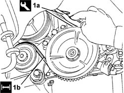
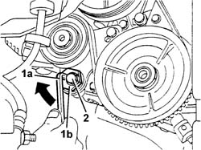

1092B54 alternator/water pump drive belt - adjust tension
- Path
- Procedures > 10 ENGINE > 1092 ENGINE COMPONENT MISCELLANEOUS DRIVES > 1092B WATER PUMP AND ALTERNATOR DRIVE > 1092B54 alternator/water pump drive belt - adjust tension
- Kind
- repair procedure (removal / refitting; the operation number is the code)
- Applies to
- all engines; all production periods
- Interactive page
- https://sloeber94.github.io/elrnDB-fDbl/en/#/2584376
Applies to: all engines; all production periods
Place the car on the ramp.
7055B54 under-engine guard - r r
1. Using the tool (1a), check that the tension of the alternator drive belt (1b) is within the recommended values.
 | Name | Country |
|---|---|---|
1a | Torque wrench | 1.895.762.000 |
 | Measurement | Value | |
|---|---|---|---|
- | Tensioning (daN) | 60 ÷ 75 | |
New belt (-) | - | ||
| Measurement | Value | |
|---|---|---|---|
- | Tensioning (daN) | 38 ÷ 53 | |
Used belt (-) | - | ||

Applies to: all engines; all production periods
If the reading does not correspond with the recommended values, carry out the adjustment following the instructions given.
1. Fit a key (1a) in the hexagonal hole of the tensioning device (1b), levering so as not to release the belt tension.
2. Slacken the bolt securing the alternator drive belt tensioner, increase or decrease the tension by adjusting the tensioner's hexagonal insert, then retighten the fixing bolt.
Using the tool, check again that the alternator drive belt tension is within the recommended values.

Applies to: all engines; all production periods
7055B54 under-engine guard - r r
Remove the car from the ramps.
Topics linked from this page (2)
Topics that link to this page (15)
- 1016B20 lh cylinder head extension - replace gasket
- 1016B24 rh cylinder head extension - replace gasket
- 1016C10 cylinder head - r + r and replace gasket
- 1032B10 toothed timing belt - r + r for timing adjustment or replacement
- 1032B46 toothed drive pulley - r + r
- 1032B52 toothed driven pulley (one) - r + r
- 1032C18 mobile timing system tensioner - r + r for 24 valve engines
- 1032D12 timing system protective cover(s) - r + r
- 1032D34 timing system guard assemblies - r + r
- 1088C10 water pump - r + r
- 1092A10 Crankshaft services PULLEY - R.R.
- 1092B50 alternator/air conditioner compressor drive belt - adjust tension
- 1092B82 auxilary belt mobile tensioner (one) -r+r
- 1092C10 power steering and/or self-levelling suspension pump drive belt - r + r
- 5530A10 alternator - r+r